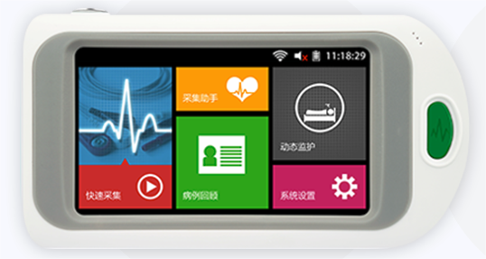
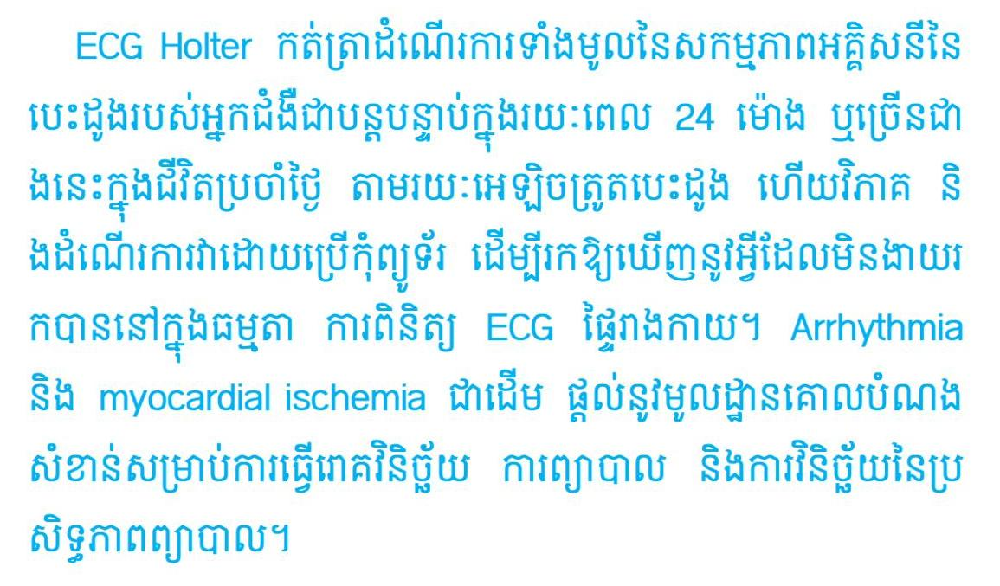
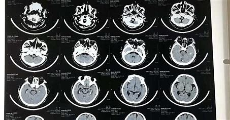

(IBD) is a chronic recurrent inflammatory disease of the intestine, including Crohn’s disease (CD) and ulcerative colitis (UC), whose etiology and pathogenesis have not been fully understood. Due to its prolonged course and chronic recurrence, IBD imposes a heavy economic burden and psychological stress on patients.
Chinese Herbal Medicine Formula (CHMF) has unique advantages in IBD treatment because of its symptomatic treatment. In recent years, many scholars have conducted fundamental studies on CHMF to delay IBD from different perspectives and found that CHMF may help maintain intestinal integrity, reduce inflammation, and decrease oxidative stress, thus playing a positive role in the treatment of IBD.
The following are some published in international academic journals related to Chinese herbs and moxibustion Research articles with good results for IBD:
Interventions for the management of abdominal pain in Crohn's disease and inflammatory bowel disease
（https://pubmed.ncbi.nlm.nih.gov/34844288/）
Massage Acupuncture, Moxibustion, and Other Forms of Complementary and Alternative Medicine in Inflammatory Bowel Disease
（https://pubmed.ncbi.nlm.nih.gov/29173528/）
IL-10-dependent Effect of Chinese Medicine Abelmoschus manihot on Alleviating Intestinal Inflammation and Modulating Gut Microbiota
(https://pubmed.ncbi.nlm.nih.gov/37518098/)
Flos Abelmoschus manihot extract attenuates DSS-induced colitis by regulating gut microbiota and Th17/Treg balance
(https://pubmed.ncbi.nlm.nih.gov/31254739/)
Acupuncture improves the symptoms, intestinal microbiota, and inflammation of patients with mild to moderate Crohn's disease: A randomized controlled trial
（https://pubmed.ncbi.nlm.nih.gov/35198926/）
Acupuncture is safe and effective for improving the motor function of poststroke hemiplegic patients. currently in the world, stroke often is the leading cause of death and disability, resulting in 70% of survivors living with motor function impairments.Evidence-based medicine has shown that poststroke functional rehabilitation is the most primary method to decrease the disability rate and get functional recovery.
Acupuncture has always played an important role in hemiplegic recovery in long-term clinical practice, the use of which dates back thousands of years. Both WHO and National Institutes of Health recommend acupunc- ture treatment as an alternative or as part of a comprehensive programme in stroke rehabilitation, and its positive effect has been confirmed by systematic reviews and multicentre clinical studies.
TCM includes acupuncture, cupping, pain moxibustion, herbal medicine, nutrition, tuina massage (used with modern medical techniques to treat a range of conditions), and exercise such as tai chi and qigong, which combine movement and meditation.
It is used to treat arthritis, back, neck and knee pain, gastrointestinal disorders, high blood pressure, stress, anxiety, infertility and many other medical problems. The core belief of TCM is that qi flows through energy pathways in the body called meridians. Each meridian links to an organ, or group of organs, which govern bodily functions. To stay healthy, it is important to achieve the proper flow of qi, which is considered to be the perfect balance of yin and yang, which are opposites. Yin and yang are present in everything in nature, and an imbalance of qi (too much, too little, or a blocked flow) causes disease.
ជំនាញវេជ្ជសាស្រ្តគឺខ្ពស់ណាស់
អ្នកជំងឺជាច្រើនត្រូវបានគេព្យាបាល
លទ្ធផលល្អ
 

មូលហេតុនៃជំងឺដាច់សរសៃឈាមខួរក្បាលរួមមាន ជំងឺកង្វះឈាមក្រហម ឬការហូរឈាមក្នុងខួរក្បាល។ អ្នកដែលមានហានិភ័យនៃជំងឺដាច់សរសៃឈាមខួរក្បាលរួមមានអ្នកដែលមានជំងឺលើសឈាម អ្នកមានកូលេស្តេរ៉ុលខ្ពស់ អ្នកជំងឺទឹកនោមផ្អែម និងអ្នកជក់បារី។ អ្នកដែលមានបញ្ហារំញោចចង្វាក់បេះដូង ជាពិសេសជំងឺ atrial fibrillation ក៏មានហានិភ័យផងដែរ។
នៅក្នុងប្រទេសកម្ពុជា គេសង្កេតឃើញថា ជំងឺលើសឈាមមានការកើនឡើង ដូច្នេះ ហានិភ័យនៃជំងឺស្ទះ ឬដាច់សរសៃឈាមខួរក្បាល ក៏កើនឡើងខ្ពស់ដែរ (ជំងឺលើសឈាម ជាមូលហេតុចម្បងមួយដែលបង្កឱ្យកើតជំងឺស្ទះ ឬដាច់សរសៃឈាមខួរក្បាល)។ ដូច្នេះ វិធានការល្អប្រសើរគឺ ត្រូវការពារខ្លួនពីជំងឺលើសឈាម វានឹងជួយបន្ថយហានិភ័យជំងឺគ្រោះថ្នាក់សរសៃឈាមខួរក្បាល ឬជំងឺស្ទះ ឬដាច់សរសៃឈាមខួរក្បាល ដល់ទៅ៤០% រីឯអ្នកជំងឺលើសឈាមវិញ ត្រូវព្យាបាល។